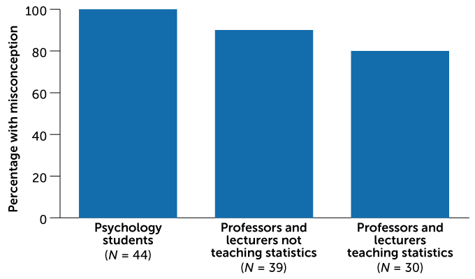
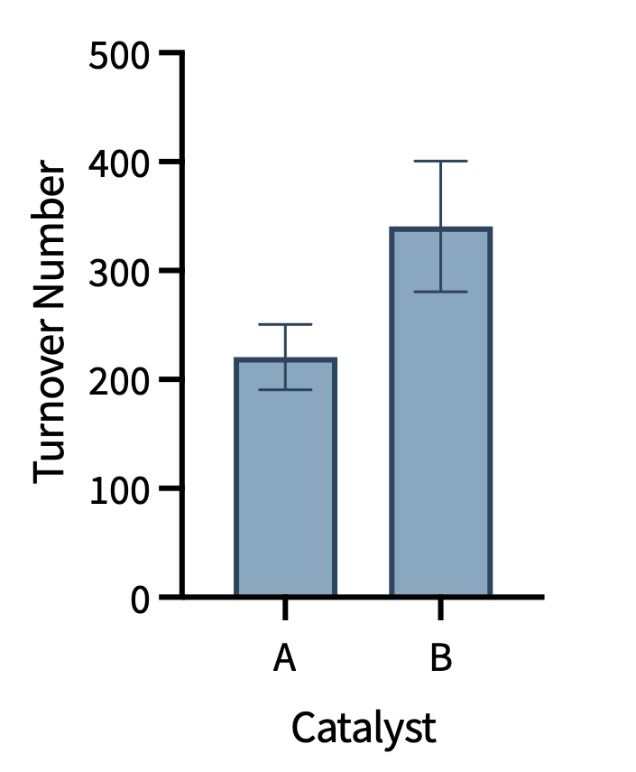

9. Effect Sizes, p-Values, and Statistical Power
This session is about putting a p-value in context by adding additional important parameters, such as fold-change, effect size, and statistical power. We will also cover computing each of these metrics in Python with pingouin.
Note: You do not need to memorize formulas for the exam.
Code set up
When p-Values Are Not Enough
Consider this result: a p-value < 0.001 (***) comparing an engineered enzyme to its starting material, but looking at the error bars in the figure, the improvement is visually unimpressive.
How do we contextualize what a p-value means in practice? Four metrics help:
- Fold-change — the ratio of the two means
- Effect size — the difference between means, normalized by variability
- Power analysis — the probability that the test would detect a real effect
- Bayesian statistics — an alternative framework (covered in Sessions 5 and 14)
p-Values Revisited
The p-value is widely misunderstood, even by trained scientists.
Much more than chemistry, psychology research and psychology education is very, very focused on statistics, but even those trained more rigorously in statistics can be wrong sometimes.

A p-value is: The probability of obtaining a test statistic at least as extreme as the one observed, assuming the model — including H₀ and all statistical assumptions — is correct.
A p-value is NOT: - The probability that H₀ is true - The probability that the result occurred by chance - A measure of effect size - Sufficient alone to evaluate a result
The phrase “assuming the model is correct” is important and often overlooked. The p-value reflects not only H₀ but also the assumptions of the test (normality, homoscedasticity, independence), the quality of the data collection, and the choice of test statistic. A small p-value may reflect a true effect, a violated assumption, biased sampling, or all three at once. This is why reporting the full analysis is essential for interpreting a p-value clearly.
As discussed in the last session, there is a lot of critique of p-values, rightly so. But these methods are pervasive in scientific literature. What can help us interpret and report p-values in a useful and honest way?
Fold-Change
Fold-change is the ratio of the means of two conditions:
\[\text{Fold-change} = \frac{\bar{x}_{\text{treatment}}}{\bar{x}_{\text{control}}}\]
Example: catalysts A and B yield 220 ± 30 and 340 ± 60 turnover numbers (n = 5). The fold-change is 340/220 ≈ 1.55 — catalyst B gives 55% more turnover.

Limitation: fold-change does not account for the variance in the data. Two results may have the same fold-change but very different reliability depending on the scatter in the measurements.
Set up the libraries, then compute the fold-change for two catalysts:
Effect Size
The effect size quantifies the magnitude of the difference between conditions, accounting for the variability in the data. It addresses the question at the heart of every comparative experiment: how meaningful is this difference?
Effect sizes are strangely under-reported in the chemistry literature, despite being recommended by statisticians and major journals for decades.
The type of effect size that you use will be linked to the type of statistical test that you use. For a t-test, there are two common effect sizes used: Cohen’s d and Hedges g. The decision of which of these two use depends on the sample size.
Cohen’s d
For large samples (n > ~20, see warning below):
\[d = \frac{\bar{x}_1 - \bar{x}_2}{s_{\text{pooled}}}\]
\[ d = \frac{\hat{\mu}_2 - \hat{\mu}_1}{\sqrt{(s_1^2 + s_2^2)/2}} = \frac{\hat{\Delta}}{\hat{s_{pooled}}} \]
A larger Cohen’s d indicates a larger magnitude of the effect.
Hedges’ g
For small samples (n < ~20, common in chemistry), Hedges’ g applies a correction factor to Cohen’s d to account for bias:
\[g = d \cdot \left(1 - \frac{3}{4(n_1 + n_2) - 9}\right)\]
A larger Hedges’ g indicates a larger magnitude of the effect.
Hedges’ g is more appropriate than Cohen’s d for the typical sample sizes encountered in chemistry (n = 4–10).
Like the significance threshold (\(\alpha\)) has a common arbitrary cutoff, there are arbitrary cutoffs for n being considered small or large as well as arbitrary cutoffs for evaluating effect sizes.
The use of n ~ 20 is arbitrary. In some texts, you will see the cutoff as 40. Cutoffs around 20-40 will be considered valid in this course. More importantly, you will always need to justify decisions made in the analysis process.
The arbitrary cutoffs for evaluating effect size are often just not relevant to experimental results in chemistry, so these have been removed from the course. Instead, you should consider the values that you obtain relative to similar data.
Often with pingouin, when we perform a statistical test, the effect size is included in the output. This is the case for the t-test(target=“blank”).
Unfortunately, when we directly perform the t-test in pingouin, the effect size metric is fixed as Cohen’s d. Thus, if Hedges’ g is more appropriate, you will need to compute the effect size as indicated below (documentation(target=“blank”)).
Which effect size is more appropriate for the example data for catalyst A and catalyst B?
Power
Statistical power is the (pre-study) probability that a statistical test will correctly reject H₀ when H₀ is false, i.e. the probability of detecting a true effect.
\[\text{Power} = 1 - \beta\]
where β is the Type II error rate (the probability of a false negative).
The most common uses of power:
- Prospective (a priori): after collecting a small preliminary dataset to plan the full experiment to calculate the minimum sample size needed to achieve a target power for the full experiment (given a desired effect size and significance threshold)
- Post-hoc: after an experiment to assess the power of the study to detect the observed effect
The conventional, arbitrary target is 80% power at α = 0.05, but these thresholds are themselves arbitrary.
Often, a power cutoff of 80% is often used. However, this is arbitrary. A higher cutoff or a lower cutoff may be more appropriate depending on the research question.
Power Depends on Four Parameters
| Parameter | Effect on power |
|---|---|
| Sample size (n) | ↑ n → ↑ power |
| Effect size | Larger effect → ↑ power |
| Significance threshold (α) | Larger α (e.g. 0.10) → ↑ power, but ↑ Type I error rate |
| Standard deviation (σ) | Lower StDev → ↑ power |
Calculating Required Sample Size
If you want to acheive a given power, you can use a selected power value and then calculate the number of replicates needed given the effect size, significance threshold, and the standard deviation.
For this calculation the equation for a two-sample comparison is
\[n = \frac{(z_{1-\frac{\alpha}{2}} + z_{1-\beta})^2 \cdot 2s^2}{\delta^2}\]
where δ is the minimum detectable difference between means, \(s\) is the estimated standard deviation, and \(z_{1-\frac{\alpha}{2}}\) and \(z_{1-\beta}\) are derived from the probability density function. In practice, this calculation is always done with software.
For this course, I would suggest using a tool from statsmodels TTestIndPower().solve_power.
A critical point: to calculate the required sample size, you need an estimate of both the expected effect size (δ) and the standard deviation (\(s\)). This is one reason why exploratory experiments are necessary before confirmatory studies! There is no way to calculate a meaningful sample size without some prior knowledge of the system.
Calculating the power of an experiment
To calculate the power of an experiment, you need the sample size, effect size, significance threshold, and standard deviation.
This calculation can be done directly in pingouin from the input data.
Understanding power
The connection between p-value, effect size, and sample size is important: for a fixed effect size, increasing n will always eventually produce a significant p-value. A p-value of <0.001 from n = 1000 per group may reflect a tiny, possibly irrelevant difference. A non-significant p-value from n = 3 per group may reflect a large, practically important difference that the study simply lacked power to detect. Effect size and power thus convey information the p-value cannot.
How to gain power
- Increase sample size — most direct, but limited by cost and practicality
- Reduce measurement variability — better controls, more standardized protocols
- Simplify the research question — a one-tailed test halves the p-value compared to a two-tailed test for the same direction of effect
- Data blocking — grouping replicates to remove a known source of variability (covered in Session 17)
Further Reading
The following papers address the relationship between p-values, power, and effect sizes in depth:
- 10.1080/00031305.2016.1154108 — American Statistical Association statement on p-values
- 10.1038/nmeth.4120 — P values and the search for significance
- 10.1038/d41586-019-00857-9 — Scientists rise up against statistical significance
- 10.1098/rsbl.2019.0174 — What alternatives could fill the power vacuum?
- 10.4300/JGME-D-12-00156.1 — Importance of effect size
- Contextualize a p-value with fold-change, effect size, and power.
- There are specific effect sizes for significance tests. For the t-test, common effect sizes are Cohen’s d, or Hedges’ g.
- Power is the (pre-study) probability of detecting a true effect
- Large n makes trivial effects “significant”; small n can miss real effects.
In person
TBD